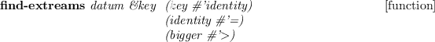
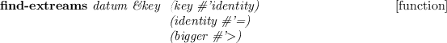

mtimer [クラス]
:super object
:slots buf
-
-
:init [メソッド]
-
- Initialize timer object.
:start [メソッド]
-
- Start timer.
:stop [メソッド]
-
- Stop timer and returns elapsed time in seconds.
permutation lst n [関数]
-
- Returns permutation of given list
combination lst n [関数]
-
- Returns combination of given list

-
- Returns the elements of datum which maximizes key function
eus-server &optional (port 6666) &key (host (unix:gethostname)) [関数]
-
- Create euslisp interpreter server, data sent to socket is evaluated as lisp expression

-
- Connect euslisp interpreter server until success
format-array arr &optional (header ) (in 7) (fl 3) (strm error-output) (use-line-break t) [関数]
-
- print formatted array
his2rgb h &optional (i 1.0) (s 1.0) ret [関数]
-
- convert his to rgb (0 <= h <= 360, 0.0 <= i <= 1.0, 0.0 <= s <= 1.0)
hvs2rgb h &optional (i 1.0) (s 1.0) ret [関数]
-
- convert hvs to rgb (0 <= h <= 360, 0.0 <= i <= 1.0, 0.0 <= s <= 1.0)
rgb2his r &optional g b ret [関数]
-
- convert rgb to his (0 <= r,g,b <= 255)
rgb2hvs r &optional g b ret [関数]
-
- convert rt to hvs (0 <= r,g,b <= 255)
color-category10 i [関数]
-
- Choose good color from 10 colors
color-category20 i [関数]
-
- Choose good color from 20 colors
make-robot-model-from-name name &rest args [関数]
-
- make a robot model from string: (make-robot-model ''pr2'')
-
-
-
-
-
-
-
-
-
-
2016-02-26